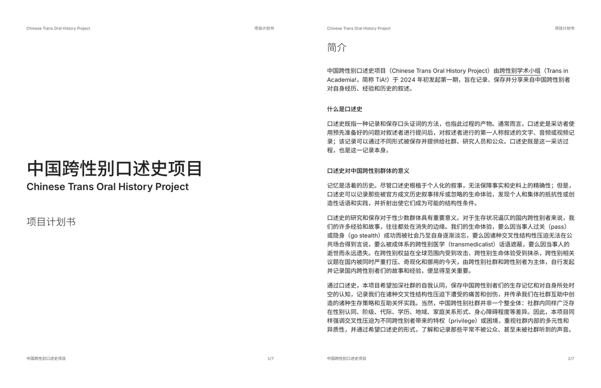
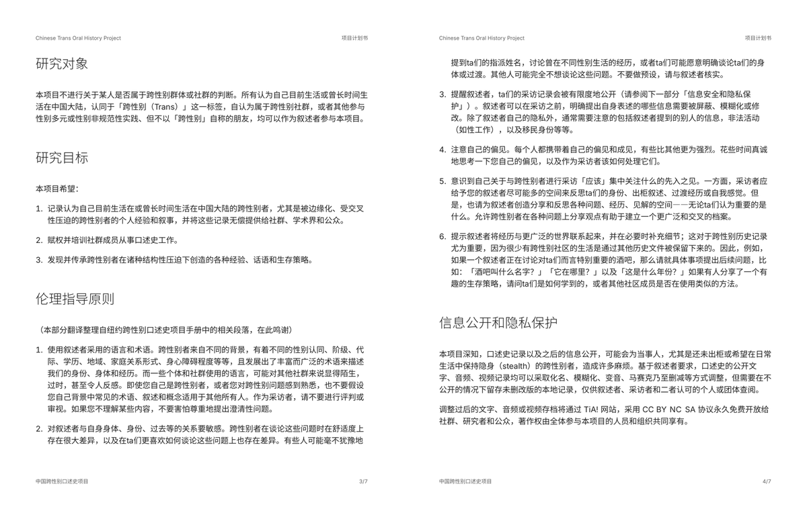
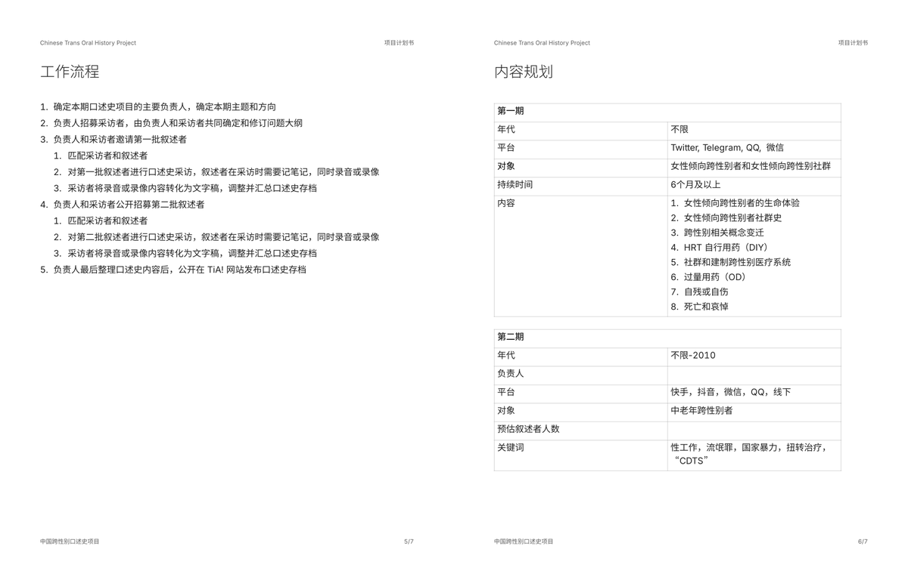
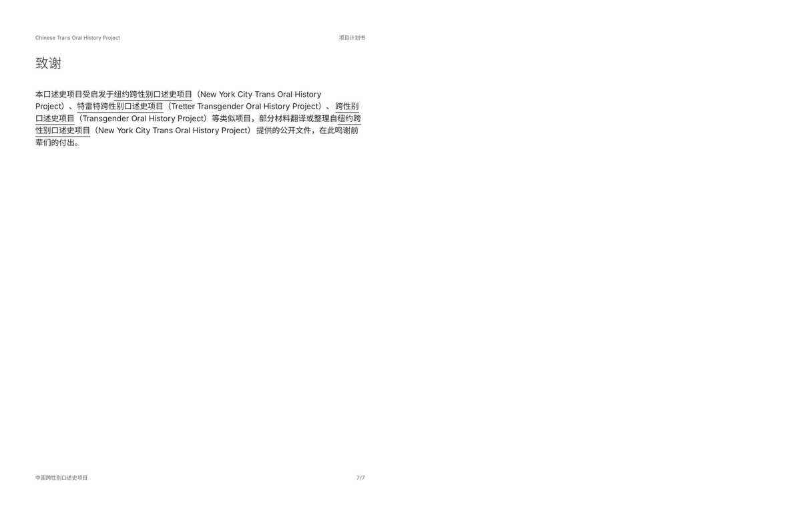

𝒂𝒎𝒃𝒆𝒓🏳️⚧️
@amber_digit2
我想继续做。




跨儿学术小组 Trans in Academia! 🏳️⚧️
@transinacademia
各位好，「中国跨性别口述史项目」在一个多月的筹备后，终于正式启动啦！本项目由跨性别学术小组 Trans in Academia! @transinacademia 发起第一期，主题为女性倾向跨性别者和社群，目前正在招募采访者和邀请第一批叙述者。欢迎想成为采访者的朋友们私信联系本号，也欢迎各位点赞转发评论本条推文！ https://t.co/DTslbqiNNN